垂水スタジオ
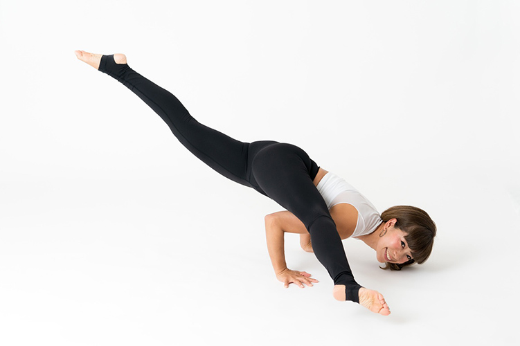
Chiemi Sora
空 智英美
バレエやダンスなどに触れる幼少期を過ごす。
4人の子供を育てながら健康であることの大切さに気づき
7年前にヨガに出会う。その後インストラクターの道を志す。
日々ヨガの練習を通し得た知識を多くの人と
シェアするため自らの深い学びを今もなお継続しております。
ヨガのスキルや人間の体の知識を築き上げていくことで
生徒達への素晴らしい希望を引き起こすようなクラス作りに日々努め、
年間600本近いレッスンを行う傍ら、スタジオレッスン以外にも
イベント開催や出張ヨガ、企業ヨガなど活動の幅は広い。
今後もヨガを実践していく中で得られる内側からの喜びや豊かさ、
ヨガからの恩恵を、1人でも多くの人にシェアしていきたいです。
-
【企業・出張ヨガ活動経歴】 PUMA JAPAN 大阪支社 朝ヨガ活動
PUMA JAPAN ヨガイベント
（大阪、京都、兵庫、福岡、熊本、鹿児島、愛媛）その他、企業、学校、幼稚園、児童館、
サークル、寺ヨガ、ビーチヨガなど、各種イベントで活動中 -
【資格】
全米ヨガアライアンスRYT200取得 Certified Jivamukti yoga sw
IHTA認定ヨガインストラクター2級指導者認定
IHTA認定マットピラティス指導者認定
IHTA認定マタニティヨガ指導者認定
IHTA認定フェイシャルヨガ指導者認定
KIDエアリアルヨガ指導者認定
SUDARSHANA YOGA 陰ヨガ指導者認定
Judy krupp セラピーヨガ指導者認定 Body
tone NY 骨盤調整ヨガ指導者認定
中井まゆみ 筋調整ヨガ指導者認定
佐藤ゴウ ヨガベーシック指導者21時間養成講座TTC修了
内田かつのり 経絡ヨガTTC修了
予防医学リンパセラピスト カッサボディコース修了
予防医学リンパセラピスト カッサフェイスコース修了
インターナショナルスーパーフード協会
スーパーフードアドバイザーコース修了
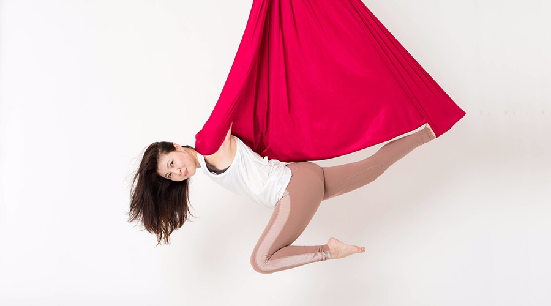
miho
水越 美穂
-
ヨガは私にとって、「自分を成長させてくれる」「人と繋がる」場所です。以前から首に痛みを持っていましたが、エアリアルヨガのハンモックで逆さまになることで、背骨、首、腰が伸び、首の痛みが無くなりました。
ヨガを通じて、新しい出会い、そして体と心のケアを沢山の方と共感、体感、サポートできればと思います。 -
ヨガ講師 エアリアルヨガインストラクター
ハッピーヨガ（ハタヨガ）インストラクター
シニアヨガインストラクター
レイキセルフティーチャー
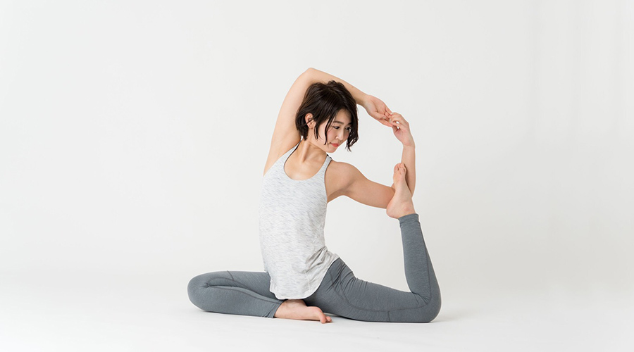
aya
岡部 彩
-
purema yoga主峰
垂水～加古川を中心に自身のクラスやヨガイベント開催など活動の幅を広げている、10歳と1歳の姉妹のママ。
子育ての傍らRYT200、マタニティヨガ、キッズヨガ、シニアヨガ資格取得。
「ヨガを日常に」をモットーに 呼吸を大切に自分自身の体と心を整え、
生徒がリラックスできるような心地よいクラス作りを大切にしている。 -
全米ヨガアライアンスRYT200取得 全米ヨガアライアンス
キッズヨガ＆アーユルヴェーダ30時間TTC修了
全米ヨガアライアンス マタニティヨガ35時間TTC修了
spirit yogaサラパワーズ 陰ヨガ10時間集中コース修了
ルナワークス シニアヨガTTC修了
ture arts yogaスキルアップ50時間TTC修了
内田かつのり 実践ヨガ解剖学講座基礎編 修了
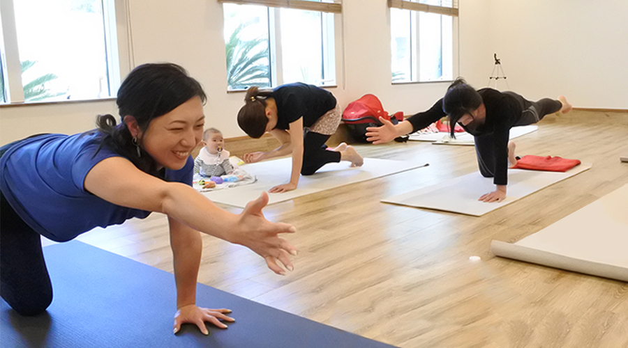
AKO
谷口 亜希子
-
Shanti+Yoga 主宰 AKO 兵庫神戸・明石中心に活動中の3姉妹のママ。
ママヨガ、産後ヨガ、ママとベビーのヨガ、ベビーヨガ、ベビーマッサージ、キッズヨガ
その他イベントやWSも開催生まれ育った場所を離れ、知らない土地での初めての生活・妊娠・出産・育児…
そんな中ヨガに出会い、ヨガに救われ、ヨガが自分にとってなくてはならないものなんだと気づき、1人でも多くの方が私のようにヨガで救われ、育児が楽になればという思いが強くなり資格を取得。 - 一般財団法人 日本ママヨガ協会 ママとベビーのヨガ 認定講師
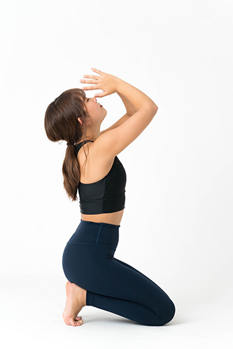
Himari Sora
空 ひまり
-
幼い頃からバレエやダンス、水泳などを習い、体を動かすことの楽しさを知る。
母の運営するヨガスタジオのレッスンを受けるようになり、ヨガをすることで、身体や心への心地良い影響を知り、ヨガについてさらに深く学ぶ決心をし、ヨガのメッカでもあるアメリカ、ニューヨークへ単身渡米。BODY
TONE NY代表の石村友見を師にもち、全米ヨガアライアンス200を取得。 - 全米ヨガアライアンスRYT200取得
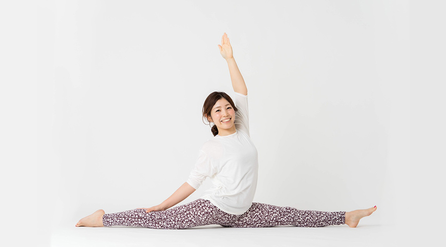
HITOMI
中塚 瞳美
-
垂水を中心に活動中 2男児の母
産前産後、授乳育児中の悪姿勢でカラダの歪みや疲れやすさを実感し、ヨガを始める。
ヨガは 健康法、美容やダイエット、スポーツやメンタル強化など
何ものにも役立ち、 「生きるヒントになる魅力的なもの」です。
日々の生活で固まる思考や肉体をゆるめほぐして整える。
気張らず迷わずシンプルに。 ヨガを楽しみましょう！ -
IYA公式認定指導者
IYAアロマセラピーマスターインストラクター
IYAキッズヨガアドバンスインストラクター
IYAアーユルヴェーダアドバンスインストラクター
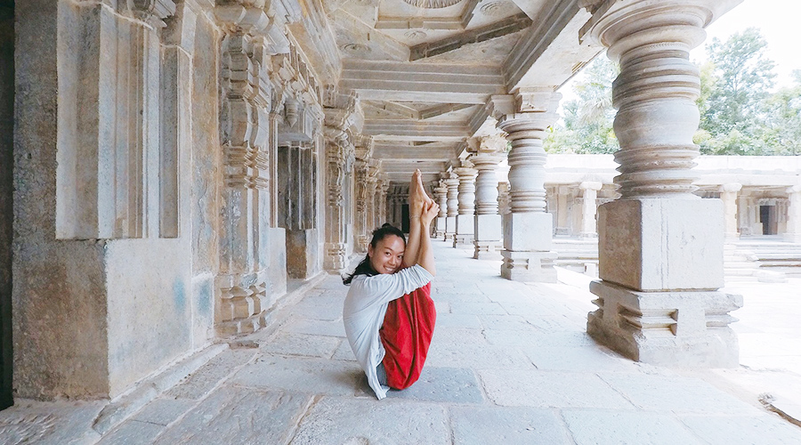
Zhang
張 萱
-
私は中国で北京舞踊大学大学院を修了し、修士号を取得しました。こどもの時からダンスを習っています。中国伝統民族舞踊、中国古典舞踊、バレエ、モダンダンスやジャズなど、様々なジャンルのダンスも学んでいます。
清水誠也先生について、アシュタンガヨガを始めました。アシュタンガヨガ発祥の地マイソールのShri
K Pattabhi Jois Ashtanga Yoga Institute でR. Sharath
Jois師に師事して修業しました。 今神戸を中心にクラスを行っています。
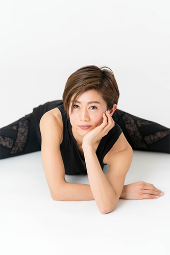
Hiromi
岩崎 ひろみ
-
La-nature 主宰
神戸を中心に、男女の双子を含む4人の子育てをしながら
ピラティスインストラクターとして活動中。
また自宅にてエアリアルヨガレッスンを開講中。ピラティスは単に体幹を鍛えるものではありません。
呼吸を重視し、心と身体の内側にも働きかけるトレーニングです。ピラティスに出会い、それは私の人生にはなくてはならないものになりました。その素晴らしさを1人でも多くの方に伝えていきたいと思っています。
-
BESJマットピラティストレーナー
コアビーンズ認定インストラクター
エアリアルヨガインストラクター
六甲道スタジオ
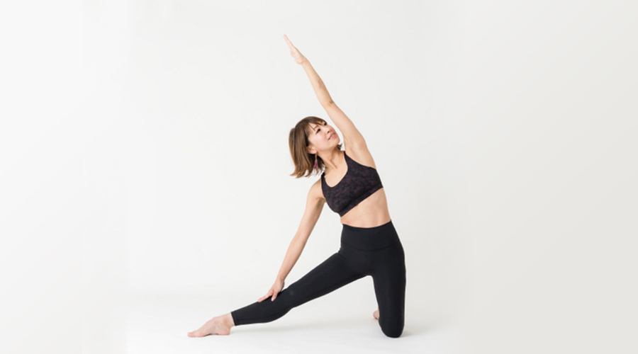
Tomoko
岡本 智子
-
私はネイリストの仕事を長きにわたり続けていて、ひどい肩こり、ストレートネックや腰痛と体が悲鳴をあげていました。当時はマッサージに通ってもスッキリするのは一瞬で、なかなか改善されず悩んでいた時、友達の誘いでヨガレッスンを受講。そのレッスン後の心と身体のスッキリ感に感動し、身体や不調も改善され、もっとヨガのことを勉強したいと思い、資格を取得しました。
1人でも多くの方にyogaの素晴らしさを知ってもらい、心と身体が健康になれる。そんなクラスを作っていきたいと思います。 -
全米ヨガアライアンスRYT200取得
IHTA認定ヨガインストラクター２級指導者認定
IHTA認定キッズヨガ指導者認定
IHTA認定ピラティス指導者認定
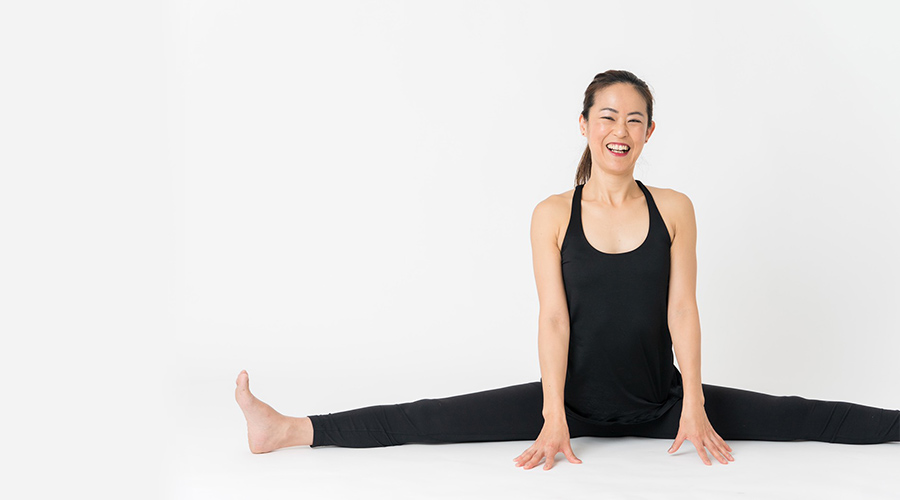
Ayumi
吉田 歩美
- 学生時代より人と関わる事を仕事したいという思いがあり、教育免許を取得。営業職を経て結婚退社。マタニティ期にヨガに出会う。10年間で3児の母に。長い育児期間中に自分らしく暮らす事の大切さに気付き、整理収納・DIYアドバイザー・保育士資格を取得。Lachicゆとり工房を主催してWS開催やブロガーとして活動。家族の体調不良の経験から「自分らしさとはまずは心身から。誰もが一生涯続けられるのはヨガ」と思い至り、子供の就学を期にヨガインストラクターになる。
-
【経歴】
兵庫・大阪でスタジオレッスン・出張ヨガ・WS・プライベートレッスン等フリーランスで活動中
【資格】
全米ヨガアライアンスRYT200修了
IHTA認定ヨガインストラクター１級指導者
IHTA認定ヨガインストラクター2級指導者
IHTA認定マットピラティス指導者
IHTA認定リストラティブヨガ指導者
IHTA認定チェアヨガ指導者
予防医学リンパセラピスト学院認定経絡ハンドセラピスト
予防医学リンパセラピスト学院認定経絡フットセラピスト
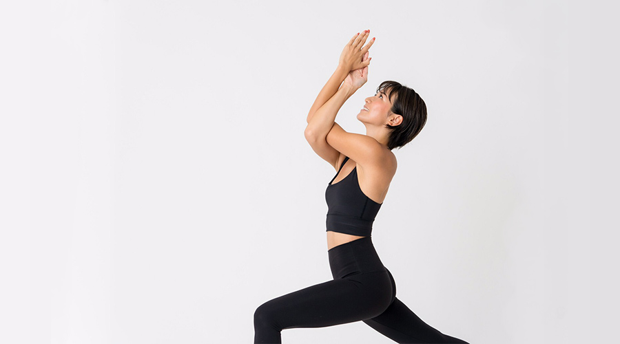
Anna
尾﨑 安奈
-
9年前にヨガと出会い、身体の変化だけでなく心が豊かに、自分の内面まで変えられることのできるヨガに魅了されました。
ヨガは私にたくさんのことを教えてくれ、なくてはならない存在です。
日々の練習で学んだことをみなさんにシェアし、たくさんの方がヨガで心も身体もhappyで満たされますように。 -
【経歴】
大手ホットヨガスタジオでレッスンを担当。
退職後、学びを深める為ハワイでRYT200を取得。
フリーインストラクターとしてグループレッスンやイベントレッスン等を担当。
【資格】
IHTA認定ヨガインストラクター1級
全米ヨガアライアンスRYT200
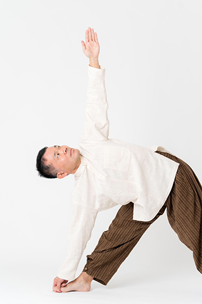
Toshi
内村 俊彦
-
長年肩凝りや腰痛に悩まされ、ついには五十肩まで。自分の体は自分で面倒見るしかないと、ヨガの体験レッスンを受け、翌朝の体調の変化に感動。あの朝の空の青さは今でも鮮明に覚えています。それからは健康になることを目指し、指導者養成講座を一気に受講。体だけでなく心や生活習慣まで変化していくヨガの教えにすっかり魅了され、2年半で300回近いレッスンを受講。
他の人にもヨガの素晴らしさを感じてほしいとヨガインストラクターの扉を開くことに。女性はもちろん、昔の私と同じような男性にこそ、ヨガに出会って健康にそして幸せになってほしいです。 -
【経歴】
18歳でプチ瞑想を生活に取り入れ、集中力がアップした経験があります。
ヨガとの出会いは 2017年9月。
ドニー先生や柳本和也先生のリトリートを始めとして、数々のワークショップや養成講座を受講。
【資格】 全米ヨガアライアンス RYT200取得
武井典子 ヨガの呼吸と瞑想講座修了
山下晃進 シニアヨガ指導者認定
中井まゆみ 筋調整ヨガ指導者認定
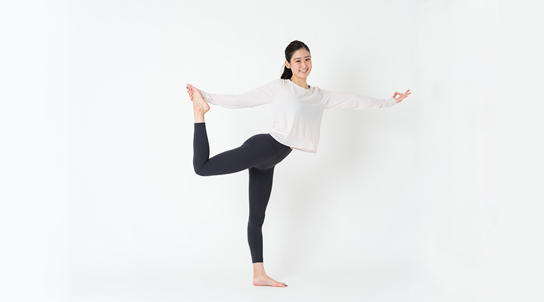
Yuka
和田 悠佳
-
今までの私は周りの環境や、「過去」や「未来」の外側ばかりに気を取られていました。ヨガを始めてからヨガの時はもちろん日常の生活でも「今この瞬間」の内側に目を向ける様になりました。ヨガは、意識して今の呼吸やアーサナに集中する事で、気持ちを前向きにさせてくれ、心を穏やかにさせてくれる素敵なツールです。無理のない範囲で他人と比べず、自分の心地良いを一緒に探して楽しくヨガをしていきましょう。
体の硬さ年齢や経験は一切関係ありません。一人でも多くの方にヨガの魅力を共有できたら嬉しいです。自分の為にも周りの人の為にも、ヨガの楽しさや喜びを感じていきましょう。 -
【活動経歴】
仙台女川町健康プロジェクトイベント
【資格】
全米ヨガアライアンRYT200
チェアフル親子ヨガ
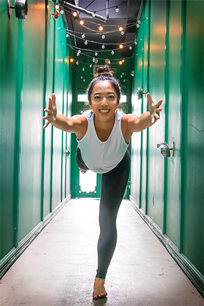
Yumiko
丹羽 有実子
-
神戸を拠点にヨガ＆サップヨガ講師として活動中。
幼少期バレエをする中で、柔軟力はあったものの体幹のなさや関節の不安定さに漠然と恐怖心を感じていたが、ヨガに出会い、外見の美しさや形ではない、ヨガの心身における本質的な学びの深さに興味を持つ。
身体の声や仕組みに理解を深めることを日々怠らず、筋が通った独創的なアプローチを通して、主体性の高いクラス作りを心掛けている。
オフザマットでは、ハワイサップヨガ協会認定講師としてプールや海での体験クラスを定期開催し、自身のライフワークとして、関西におけるサップヨガの普及活動にも力を入れる。
ご自身の身体や心に興味をもって、ヘルシーマインド＆ボディを一緒に磨きましょう！ -
全米ヨガアライアンスRYT200
Vinyasa Teaching Skill Program -True Art Yoga- by金子まや(RYT)
Restorative Yoga(RYT)
E.M.I認定Core Power Yoga®
HSYA認定SUP YOGA
FTP認定ピラティス
アロマセラピー(RYT)
シニアヨガ(RYT)